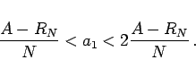

Die Abschreibungen sind in diesem Falle nicht konstant. Sie nehmen jährlich um den gleichen
Betrag d, das Abschreibungsgefälle, ab. Für die Abschreibungsrate im n-ten Jahr gilt:
 |
(1.93) |
Aus dieser Gleichung folgt unter Berücksichtigung der Beziehung
Für d=0 ergibt sich als Spezialfall die lineare Abschreibung. Im Falle d > 0 folgt aus (1.94)
| (1.95) |
wobei a die Abschreibungsrate der linearen Abschreibung ist. Insgesamt muß die erste Abschreibungsrate a1 der arithmetisch-degressiven Abschreibung der folgenden Ungleichung genügen:
|  | (1.96) |
| Beispiel | ||||||||||||||||||||||||||||||
|
Eine Maschine mit dem Anschaffungswert
|